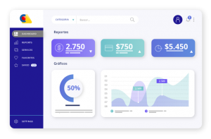

Archivo editorial de Creangel. Las referencias, cifras y condiciones corresponden a la publicación original.
Cada día las necesidades de las compañías para mejorar los métodos de procesamiento y recopilación de procesos de información, los mecanismos para almacenar y analizar datos de actividades u operaciones son más exigentes. Lo que buscan las compañías es que, estas acciones, ayuden a optimizar el rendimiento de cada una de las áreas y son las metas del departamento de desarrollo e innovación. Es de esta necesidad de controlar la visualización de la información y la toma de decisiones basada en datos estratégicos, que hace unos años el termino Inteligencia de negocios se escucha con mucha frecuencia y en las compañías ya es una necesidad adquirida.
En Creangel nos destacamos por la creación de herramientas basadas en necesidades reales de las compañías y de optimizaciones disruptivas basados en la tecnología más avanzada. Nuestra experiencia de más de 18 años nos brinda una mirada estratégica, que solo busca entregarles a las compañías todo lo necesario para crear una visualización integrada de la empresa y de una manera simple y amigable ayudar en la toma de decisiones. Para lograrlo nos enfocamos en cambiar la manera de hacer las cosas y de mejorar los procesos.
Para poder entender cuál es la incidencia del Lakehouse en nuestro día a día, les contaré de una manera sencilla como funciona y como mejora la calidad en los procesos de Analítica y por ende todas las actividades en inteligencia de negocios (BI) desde la herramienta diseñada por Creangel.
Todos los procesos de análisis de información parten de una o varias fuentes de información, se recopilan datos sin procesar de la actividad de la empresa. Los datos se procesan y se guardan en almacenes de datos. Una vez almacenados, los usuarios pueden acceder a los datos, lo que da comienzo al proceso de análisis para responder las preguntas del negocio. Esta información en la mayoría de las empresas, hace parte de su sistema transaccional y es necesario cuidar el rendimiento de dichos sistemas para que las acciones de búsqueda no ralenticen estas herramientas que son necesarias para el funcionamiento director del Core de las compañías.
Aquí los sistemas tradicionales de analítica tienes dos opciones; la primera es efectivamente cuidar el funcionamiento de las herramientas transaccionales de la empresa y lo que hacen es capturar la información en varios tiempos y de esa información (que vale la pena aclarar nunca estará realmente actualizada), previsualiza unos cuadros que pueden ser utilizados por los analistas, sabiendo que estas solicitudes de información pueden durar horas y hasta días en ser entregados. Y por otro lado está el no tomar toda la información sino una media de esta (un pedazo), y si las empresas quieren la información en tiempo real siempre será impactando el transaccional ralentizando las acciones diarias de la empresa.
Además, las opciones tradicionales en visualización de datos para analítica no están diseñadas ni preparadas para inmensos volúmenes de información, dando como actividad subsiguiente la necesidad de dividir la información para poder manejarla y repitiendo varias veces el proceso y esto es una acción completamente opuesta a la optimización de los procesos que es la meta por lo que las compañías vuelven sus ojos hacia la inteligencia de negocios. Es decir, lo que las compañías en este momento usan para poder visualizar la información y así tomar decisiones que optimicen y mejoren los procesos de la compañía se debe mejorar porque esta basada en acciones repetitivas y reprocesos.
De ahí nació la necesidad de Creangel de diseñar una herramienta capaz de manejar grandes volúmenes de información, en tiempo real, con toda la data (no solo un pedazo), sin impactar el transaccional y lo último, pero no menos importante, de fácil acceso en temas operativos y de costes.
Así funciona nuestra herramienta. Para empezar IFINDIT para Analítica funciona bajo un tipo de base de datos que permite mantener un histórico del estado a través del tiempo de los diferentes sensores y mediciones, el tiempo y la naturaleza del tiempo en cada uno de los datos es fundamental para poder hacer bien nuestro trabajo, ya que, al estar basado en un Lakehouse, que es una base de datos de análisis en tiempo real de alto rendimiento donde la búsqueda parte de estas mediciones. Lo innovador y heterodoxo de nuestra herramienta y que realmente hace la diferencia es en base a los siguientes 3 componentes:
El primero es el procesamiento coordinado que se refiere a tener diferentes almacenes (nodos) de forma independiente, la herramienta tiene la posibilidad de trabajar con todos los almacenes que necesite dependiendo el tamaño de la información, mientras que las herramientas tradicionales lo hacen solo con un almacén. Por ejemplo, tiene un almacén maestro que controla todas las acciones hacia el servidor, tiene almacenes que distribuyen las consultas, tiene almacenes de datos y esta en la capacidad de crear los almacenes necesarios, miles de almacenes individuales si lo necesita para responder las consultas en tiempos récord. Es decir, si trasladamos este modo de trabajar a una plantación de café, no es el mismo resultado el de un solo recolector a 200 recolectores haciendo la misma actividad al mismo tiempo. Al final del día los 200 recolectores habrán traído más café a la trilladora muy por encima del trabajo de un solo recolector que además durará mucho más tiempo para recolectar toda la cosecha. Esto también nos permite mayor numero de usuarios realizando búsquedas porque la búsqueda se hace de manera horizontal por todos los almacenes y no de manera vertical por un solo almacén, lo que también impacta el coste de las herramientas tradicionales y nuestra herramienta que es mucho más accesible, porque no es por la cantidad de búsquedas ni por los usuarios, puedes buscar millones de veces, y puedes tener usuarios por doquier y el precio será el mismo.
El segundo es la arquitectura hibrida que se refiere a que tenemos componentes locales y almacenamiento espaciado, esto es básicamente almacenamiento y procesamiento por separado. Aquí podemos utilizar almacenamiento profundo para redistribuir la carga de trabajo y que no colapse, los almacenes a los que nos referimos anteriormente (nodos) tienen cargas de trabajo distribuidos de manera automática lo que lleva a no tener tiempo muerto en las actividades o tiempo inactivo y trabajo manual, y es una de las características que menos gustan de las herramientas tradicionales de la competencia. Un ejemplo con la vida diaria es el propósito de un asignador de turnos como el que se usa en las empresas en atención al cliente, los usuarios llegan, toman el turno y son asignados a un asesor, esto garantiza que los asesores atiendan por orden de llegada, dependiendo de la necesidad de los usuarios y en el menor tiempo posible optimizando el tiempo de los asesores de forma organizada. Esto lo garantiza la arquitectura hibrida de la herramienta IFINDIT para Analítica.
Y el tercero es un motor de almacenamiento eficiente. Los motores de almacenamiento son un grupo de funciones estrechamente relacionadas con la base de datos almacenada. Este motor es similar a un software oculto entre las capas de los almacenes (nodos) de nuestra herramienta y se usa para crear, actualizar, editar, visualizar o eliminar datos. Si visualizamos nuestros almacenes como la biblioteca de tu ciudad, el motor de almacenamiento eficiente, es la bibliotecaria que mantiene al día todo el catálogo, realiza las actualizaciones, elimina lo que ya no sirve, ingresa nuevos libros y te permite visualizarlos. Como pueden ver el tener motor de almacenamiento eficiente es primordial dentro de la herramienta para analítica de Creangel.
Para terminar con las características de la herramienta de analítica no hay en el mercado una opción más amigable, con menor tiempo de implementación y más fácil de adaptar que IFindIT para Dashboards interactivos. Mientras con las herramientas tradicionales de la competencia tus desarrolladores deben ser expertos en códigos y aprender de millones más para adaptarlas a la cotidianidad, nuestra herramienta se entrega completamente usable, no más código, nosotros los hacemos por ti.

Lo anterior en temas de arquitectura y tecnología, si queremos ver los resultados, la velocidad y el precio, podemos decir que la herramienta IFindIT de Creangel ofrece 3 veces por encima de las herramientas tradicionales, responde 14,3 veces más rápido las consultas y en operaciones puede hacerlo en la tercera parte del tiempo. Y si hablamos de precio, rendimiento y beneficios la herramienta IFINDIT para analítica esta creada pensando en el mercado colombiano y latinoamericano.
La competencia que comercializa las herramientas tradicionales factura por consulta, por búsqueda y por usuario lo que hace muy difícil dimensionar cuanto sería el coste real de la herramienta a mediano y largo plazo, incluso a corto plazo, ya que los costes pueden subir exponencialmente de manera abrupta en el momento que la compañía use la herramienta y haga más búsquedas diarias, adicional a la consultoría y las capacitaciones del manejo de la herramienta. A diferencia de lo anterior, la herramienta de Creangel para analítica es facturada por bloques y rangos de información, es así que desde el primer momento sabes el costo de la herramienta sin valores agregados, ni gastos sorpresa. Es decir que pueden realizar todas las búsquedas imaginadas y desde todos los usuarios que lo necesiten. Nos hemos encontrados en el mercado con compañías que contrataron las herramientas tradicionales de la competencia y empezaron con un valor moderado en el primer mes con un impacto pequeño del 10% de los usuarios y de las búsquedas necesarias y en el tercer mes tuvieron que suspender el piloto porque superaba 100 veces el valor inicial, esto sin ni siquiera alcanzar a soportar toda la necesidad real de la compañía. Si comparamos el valor real de nuestra herramienta, con el uso de las herramientas tradicionales, este puede ser 4 veces superior, adicionando la volatilidad del precio del dólar y los costes adicionales de implementación.
Hay muchas fuentes y sistemas de información que las compañías necesitan tener en cuenta, pero no pueden pasar meses en una implementación invasiva con unos valores económicos incalculables. La inversión en la visualización de la información asertiva para analítica se debe traducir para las empresas en:
- Ahorro de costes y tiempo permitiendo incrementar la productividad en la empresa
- Cumplir con las metas de eficiencia.
- Descubrir nuevas vías de negocios y de crecimiento.
- Entender necesidades de clientes actuales y mejorar sus servicios de cara al usuario.
- Fomenta la correcta gestión del conocimiento dentro de los departamentos mostrando de manera grafica datos que podrían pasar desapercibidos
- La verdadera toma de decisiones respaldadas por la información fiable, actualizada y completa
No en un dolor de cabeza más. En conclusión, las ventajas operativas y en costes de una herramienta completamente ajustada al mercado local, desarrollado 100% por colombianos, es la respuesta a las necesidades de las empresas y búsqueda constante por mantenerse a la vanguardia. Lograr que las herramientas usadas para optimizar los procesos no sean obsoletas, evitando retrocesos en las mismas, modificando de manera permanente la forma de acceder y visualizar la información y la de su participación en la toma de decisiones. La respuesta está en IFindIT Dashboards interactivos de Creangel.
Autor: Creangel